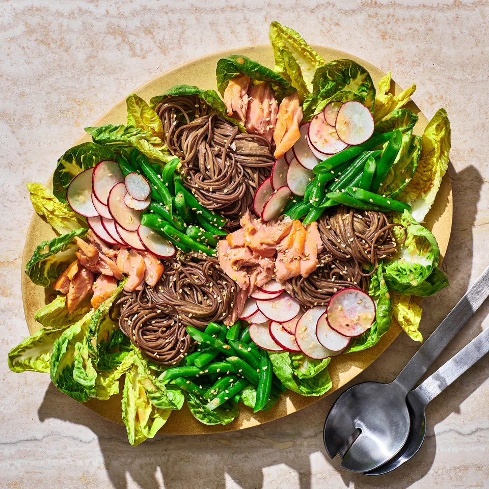

Hot-Smoked Salmon Noodle Salad
Cold salad for a hot summer

Hot-smoked salmon combines the texture of cooked, not cured, fish with deep smoky aromas (look for it in the smoked-fish case).
It stars in this riff on a traditional niçoise salad with blanched green beans, peppery radishes, and soft baby lettuces arranged
in groups but begging to be tossed all together as soon as you pick up a fork. The zesty vinaigrette packs extra punch thanks to karashi,
a nasal-clearing hot Japanese mustard that will perk up anyone after a long day in the sun. You can find prepared karashi in a tube (near wasabi),
or as a dried powder version in a small can that you’re meant to reconstitute with water; if you have trouble, English mustard (like Colman’s) or
Chinese mustard can sub in a pinch.
Ingredients
- 1 lb green beans, trimmed
- Kosher salt
- 6 oz. dried soba noodles
- 2 tbsp sesame oil
- etc.
-
Full ingredient list
>
Preparation
-
Cook 1 lb. green beans, trimmed, in a medium pot of boiling lightly salted water until bright green, about 2 minutes. Using a spider or small sieve, remove green beans and rinse under cold running water to stop them from cooking more. Shake vigorously or pat dry to remove excess water; set aside.
-
Return water in pot to a boil and cook 6–7 oz. dried soba noodles (about 2 bunches) according to package directions. Drain in a colander and rinse under cold running water, rubbing vigorously to remove excess starch. Drizzle with a bit of toasted sesame oil (about 1 tsp.; this will prevent sticking) and toss to coat. Set aside.
-
Whisk 2 tsp. dry karashi (Japanese hot mustard) or English mustard powder in a small bowl with 1 Tbsp. water to form a paste (if using 1 Tbsp. prepared karashi in a tube or English mustard, do not add the water and whisk in with the other ingredients as is). Add ¼ cup soy sauce, ¼ cup unseasoned rice vinegar, 2 Tbsp. sherry vinegar or red wine vinegar, 2 tsp. sugar, and 2 Tbsp. toasted sesame oil and whisk until sugar is dissolved. Finely grate 3 garlic cloves over and whisk to combine. Gradually pour in ⅓ cup extra-virgin olive oil, whisking constantly until emulsified. Season vinaigrette with freshly ground pepper and more salt if needed.
-
Cut reserved green beans in half on a diagonal. Place in a medium bowl; drizzle some sesame oil over and sprinkle with a pinch of salt. Toss to coat.
-
Place one 5-oz. container baby lettuce (such as romaine or Little Gem) in a large bowl; drizzle lightly with vinaigrette (2–3 Tbsp.) and gently toss to coat (gloved hands are great here). Transfer dressed lettuce to a platter, placing around the perimeter. Arrange reserved noodles in 3 bundles on platter, followed by sections of greens beans, 7 red radishes, trimmed, thinly sliced, and one 6–8-oz. piece hot-smoked salmon, flaked. Drizzle about half of dressing over green beans and noodles and sprinkle salad with toasted sesame seeds. Serve with remaining dressing alongside.